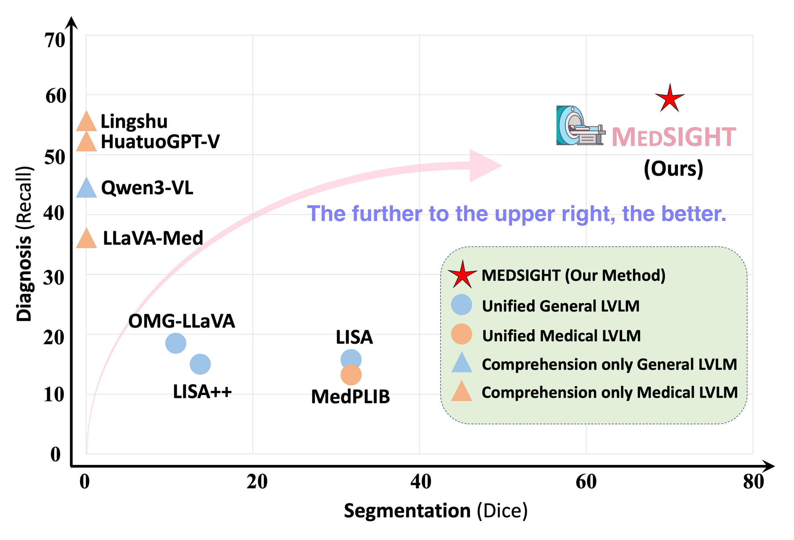
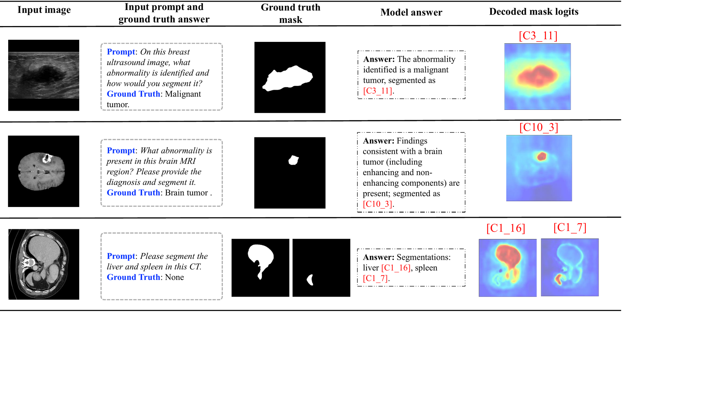
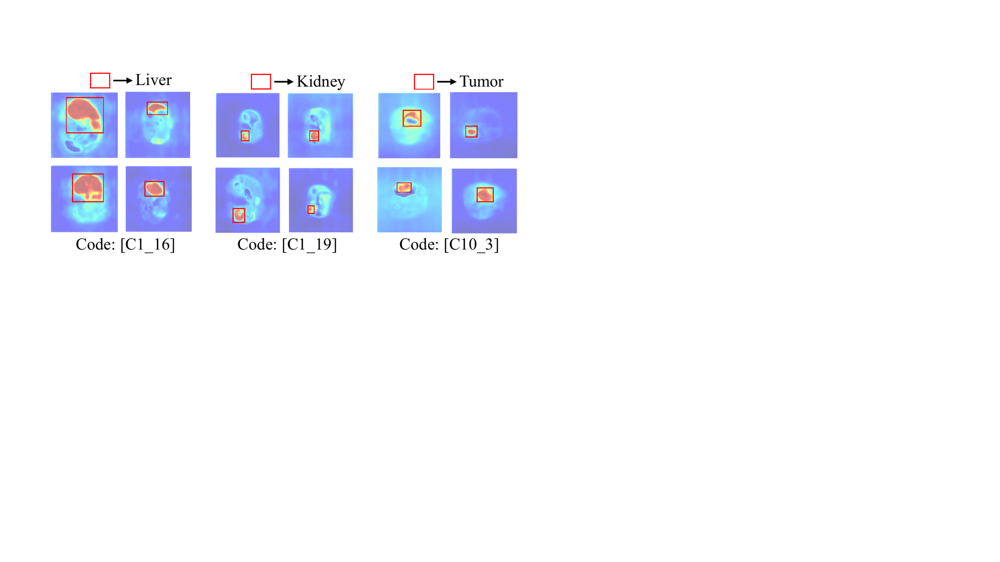

Medical large vision–language models (Med-LVLMs) have recently achieved remarkable progress in vision–language comprehension and medical image segmentation. However, existing models still struggle to unify these two capabilities, which is essential for clinically meaningful reasoning that connects visual findings with semantic interpretation. We present MEDSIGHT, a unified framework that equips Med-LVLMs with structured, pixel-level understanding for grounded visual comprehension. MEDSIGHT introduces a novel Region Perceiver module that produces region-centric tokens, encoding spatial information directly into the representation space of the language model. We further propose a medical region codebook in the LLM vocabulary, allowing the model to generate discrete region codes as symbolic representations of anatomical and pathological regions. These codes are decoded through the Region Perceiver to reconstruct segmentation masks, achieving end-to-end spatial grounding. A progressive training strategy stably aligns these modules. Trained on only 72K multimodal instruction pairs, MEDSIGHT achieves state-of-the-art performance across diverse imaging modalities on both medical comprehension and segmentation tasks.
Walk-through of how to use MEDSIGHT for grounded medical reasoning and segmentation.
Recent Med-LVLMs have demonstrated impressive multimodal understanding of medical data, but most remain limited to high-level visual comprehension and lack pixel-level grounding that aligns reasoning with verifiable visual evidence. Two key limitations of prior unified Med-LVLMs:
CLIP patch tokens encode coarse semantic context and discard crucial spatial details — lesion boundaries, organ contours, tissue textures — that medical reasoning depends on.
[SEG] token outputsRepresenting every segmentation region with one token prevents the model from distinguishing diverse anatomical structures and producing region-specific outputs needed for accurate grounding.

MEDSIGHT augments a frozen CLIP image encoder and LLM with two complementary modules — a Region Perceiver that produces pixel-aware region tokens, and a Modality-aware Region Codebook that is embedded into the LLM vocabulary. A progressive training pipeline aligns these components end-to-end.
L learnable region queries Q interact with upsampled
CLIP features through dual cross-attention — region ↔ image
— producing region embeddings Qr that encode both
semantic context and pixel-level spatial detail. The Region Perceiver is
pre-trained on BiomedParse data with
LR = LBCE + LDice + LCE
using Hungarian matching, following DETR-style segmentation supervision.
Region embeddings Qr are discretized into
K × M codes — one bank per imaging modality. Each
region picks its nearest code, which is mapped back into the visual feature space
via Wm. Codes are appended to the LLM vocabulary,
letting the LLM generate region tokens (e.g.,
[C2_16]) that the text→vision projector decodes into
segmentation masks.
Pre-train the Region Perceiver on segmentation data. Align visual features
with the language space via Pv→t.
Learn the modality-aware codebook and integrate it into the LLM vocabulary.
Align text→vision grounding via Pt→v.
Unified grounded instruction tuning: jointly fine-tune LLM, projectors and codebook with both reasoning and grounding data.
On standard VQA benchmarks (VQA-RAD, SLAKE, PathVQA, MMMU-Med, OmniMedVQA, and DiagSeg-Diagnosis), MEDSIGHT achieves an average score of 62.3, surpassing HuatuoGPT-Vision (58.3) despite using only 72K instruction-tuning samples — roughly 9× less than HuatuoGPT-Vision.
| Model | #Params | #Data | VQA-RAD | SLAKE | PathVQA | MMMU-Med | OMVQA | DiagSeg | Avg. |
|---|---|---|---|---|---|---|---|---|---|
| LLaVA-Med | 7B | 60K | 48.1 | 44.8 | 35.7 | 30.0 | 41.3 | 35.3 | 46.2 |
| HuatuoGPT-Vision | 7B | 647K | 60.0 | 60.1 | 41.3 | 43.3 | 66.4 | 51.1 | 58.3 |
| OMG-LLaVA | 7B | 1.2M | 37.6 | 39.9 | 36.2 | 32.7 | 18.3 | 28.0 | 41.0 |
| MedPLIB | 14B/7B | 500K | 34.8 | 37.4 | 18.2 | 28.7 | 61.9 | 13.1 | 37.3 |
| MEDSIGHT (Ours) | 8B | 72K | 61.4 | 60.2 | 42.6 | 51.3 | 68.9 | 58.9 | 62.3 |
On the proposed DiagSeg benchmark covering 8 medical imaging modalities, MEDSIGHT achieves a mean Dice of 69.9 for segmentation and 58.9 recall for diagnosis — substantially ahead of the next best model on both axes.
| Model | CT | MRI | X-ray | Path | US | End | Der | OCT | Avg. |
|---|---|---|---|---|---|---|---|---|---|
| LISA | 14.1 | 15.7 | 9.8 | 34.0 | 45.2 | 39.3 | 28.9 | 62.6 | 31.8 |
| GLaMM | 1.6 | 4.5 | 16.6 | 22.8 | 9.9 | 5.6 | 26.3 | 0.8 | 11.0 |
| OMG-LLaVA | 0.9 | 5.1 | 15.5 | 20.7 | 11.7 | 7.7 | 25.9 | 1.0 | 11.1 |
| MedPLIB | 3.8 | 47.1 | 29.8 | 19.3 | 49.9 | 16.6 | 80.4 | 7.2 | 31.8 |
| MEDSIGHT (Ours) | 65.8 | 82.3 | 57.7 | 52.9 | 65.8 | 70.0 | 87.7 | 55.6 | 69.9 |
MEDSIGHT correctly identifies the abnormality,
emits the matching region code (e.g., [C3_11],
[C10_3], [C1_16]), and the text→vision projector
decodes it into an accurate mask. Multi-region segmentation (e.g., liver and
spleen) is captured by separate, semantically distinct codes.


[C1_16] attends to the liver in abdominal CT.
@inproceedings{chang2026medsight,
title = {MEDSIGHT: Towards Grounded Visual Comprehension in
Medical Large Vision-Language Models},
author = {Chang, Aofei and Huang, Le and Boyd, Alex James and
Bhatia, Parminder and Kass-Hout, Taha and
Ma, Fenglong and Xiao, Cao},
booktitle = {Proceedings of the 43rd International Conference on
Machine Learning (ICML)},
year = {2026}
}We thank the anonymous reviewers for their insightful comments. We also thank Dr. Anjali Rajeev from GE HealthCare as one of the experts for participating in the human validation experiments and Dr. Haidong Yi from St. Jude Children's Research Hospital for valuable suggestions on the manuscript. This work was partially supported by the National Science Foundation under Grant No. 223827 (F. Ma).